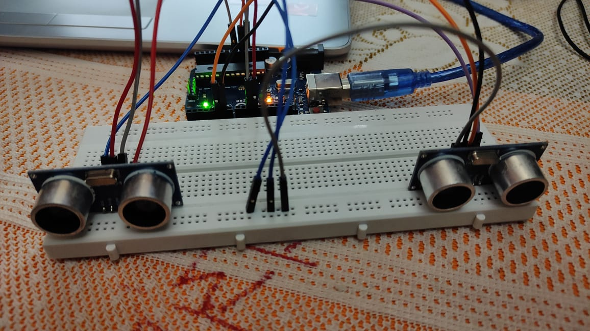

Using Arduino Uno

You might have seen Hand Gesture Controlled Robots, where the motion of a robot is controlled by the gestures of the hand. Another interesting project based on a similar principle is an Arduino based Hand Gesture Control of your computer or laptop.
Design: The design of the circuit is very simple, but the setup of the components is very important. The Trigger and Echo Pins of the first Ultrasonic Sensor (that is placed on the left of the screen) are connected to Pins 11 and 10 of the Arduino. For the second Ultrasonic Sensor, the Trigger and Echo Pins are connected to Pins 6 and 5 of the Arduino. Now, coming to the placement of the Sensors, place both the Ultrasonic Sensors on top of the Laptop screen, one at the left end and the other at right. You can use double sided tape to hold the sensors onto the screen.
Principle: The principle behind the Arduino based Hand Gesture Control of Computer is actually very simple. All you have to do is use two Ultrasonic Sensors with Arduino, place your hand in front of the Ultrasonic Sensor and calculate the distance between the hand and the sensor. Using this information, relevant actions in the computer can be performed. The position of the Ultrasonic Sensors is very important. Place the two Ultrasonic Sensors on the top of a laptop screen at either end. The distance information from Arduino is collected by a Python Program and a special library called PyAutoGUI will convert the data
Here is the link of GitHub Repository : Click Here